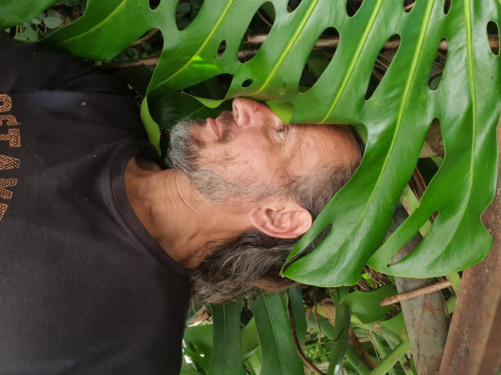

{% include analytics.html %}
Maloca Peralta | Conexões

Maloca Peralta
Aqui a gente fala de verdade, escreve porque precisa e vive porque Ele vive.
🐇 Histórias (Fábulas do Castelo de Tocas)
👊 BORA LUTAR (O ECOSSISTEMA)
📖 Escreve a porra do livro
💬 Chama no WhatsApp
🧠 Blog (Substack)
📂 Dossiê: A Estética do Medo
📸 Instagram
🎥 YouTube
f Facebook